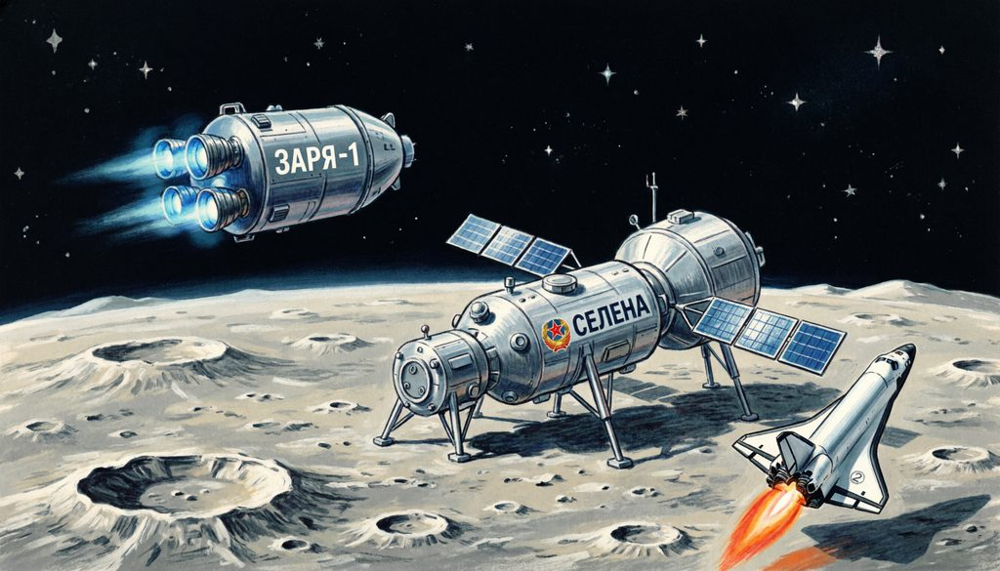
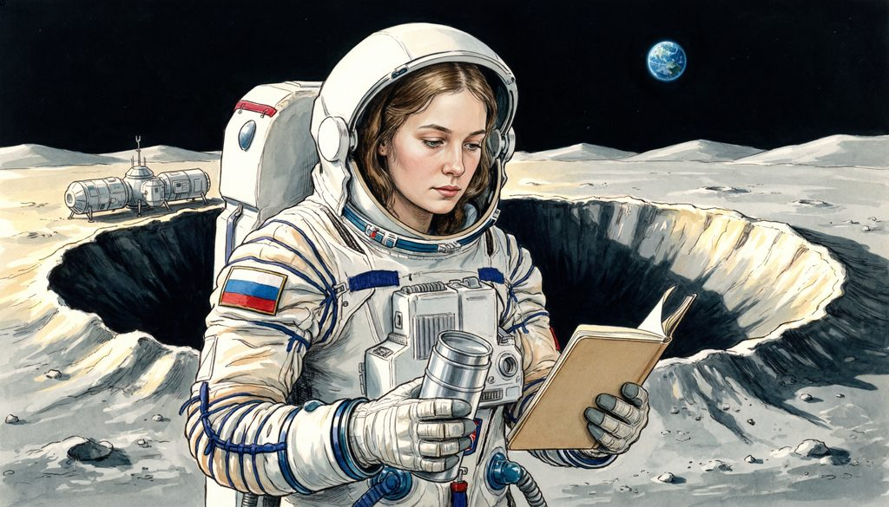

Теперь — сам, без подсказок: на настоящем туре подсказывать будет некому. Это тренировка именно такого режима.
Как поступим, стажёр?

Пирог разрезан, экипаж накормлен, печать стоит в бортжурнале.
Следующая миссия — КБ «Вега»: Григорий уже раскладывает чертежи.
Продолжение аттестации — в следующей миссии.